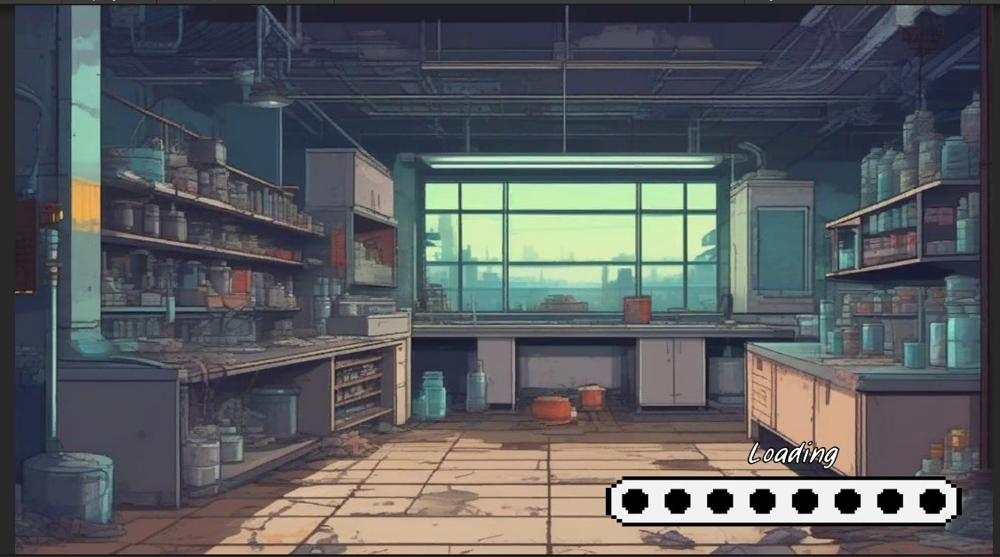
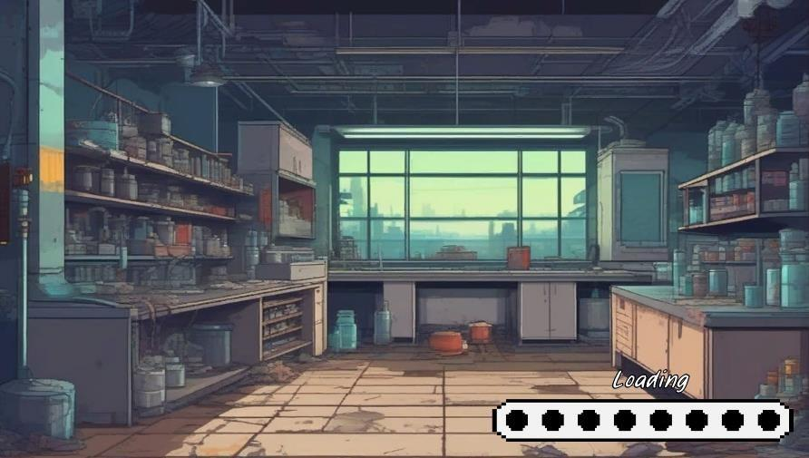
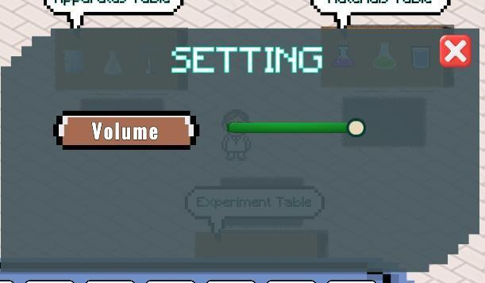
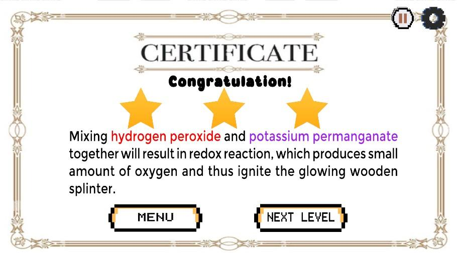
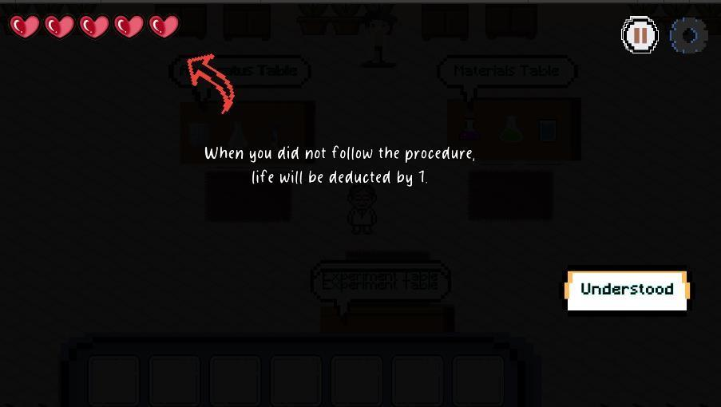

2D Game Development · Educational Game
Game-istry
A 2D educational chemistry game developed with Unity to help Form 4 science-stream students learn about the rate of reaction through interactive activities.

About the Game
// Learning chemistry through interactive play
Game-istry is a 2D educational game created to support Form 4 science-stream students in learning the concept of the rate of reaction. The project combines a game-based format with chemistry learning activities.
It was developed using Unity and C#. The project is available through its GitHub repository and release page.
Gameplay Gallery
// Screens and interface views from the project











Watch the Gameplay Demo
// Game-istry in action